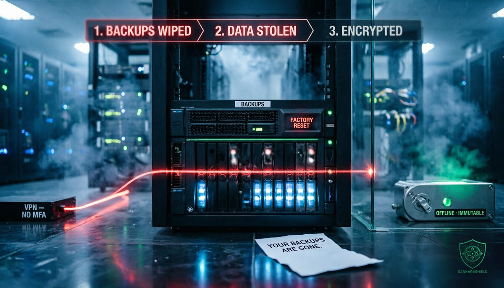

The backups went first: inside the SafePay ransomware playbook.

On Tuesday 20 October, CISA, the FBI and the US Secret Service, together with Germany's Landeskriminalamt Rheinland-Pfalz, the UK National Crime Agency and the North West Regional Organised Crime Unit, published joint advisory AA26-293A, "#StopRansomware: SafePay Ransomware."
The headline number is large: at least 600 organisations hit since August 2024, across multiple critical infrastructure sectors in North America, South America, Europe and Australia. The advisory covers intrusions observed from November 2024 to August 2026. And because SafePay's leak site only lists the victims who refused to pay, the real number is higher.
But the number is not the most important part of the advisory. The most important part is the order in which SafePay works. Before the ransom note appears, the shadow copies are gone and the NAS that held the backups has been reset. By the time the victim understands what happened, the recovery plan has already been destroyed.
HOW THEY GET IN
Nothing in the advisory requires a zero-day. SafePay's initial access is the boring kind, and that is exactly why it works.
EXPOSED CREDENTIALS — usernames and passwords that have already leaked, reused against remote access portals.
BRUTE FORCE — password attacks against VPN portals and other internet-facing logins, with the advisory noting traffic from addresses of the commercial VPN provider Mullvad.
PHISHED ACCOUNTS — valid accounts taken through phishing, which then log in like any normal user.
EDGE DEVICE CVES — automated scripts that hunt for known vulnerabilities in edge devices and other internet-exposed systems.
Every one of those doors is closed by controls most organisations already know about: MFA on every remote access path, rate limiting and lockout on VPN portals, and fast patching of anything facing the internet. The problem is rarely knowing. It is the one legacy VPN profile, the one service account without MFA, the one firewall that was going to be upgraded next quarter.
WHAT THEY DO INSIDE
Once inside, SafePay lives off the land. The advisory lists PsExec, WinRM, RDP and legitimate remote monitoring and management (RMM) software, the same tools your own administrators use every day. That is the point: their activity looks like administration, so it rarely trips an alert on its own.
They disable security software and use packing and virtual machine protection to slow down analysis of their tools.
Then comes the theft. Data is staged and exfiltrated with ordinary software: RClone, FileZilla, OneDrive, 7-Zip and WinRAR. Only after the data has left does the encryption start, using a hybrid scheme that combines the ChaCha20 stream cipher with RSA public-key cryptography.
This is double extortion. The ransom note, dropped on the desktop or in the root directory, points the victim to a Tor chat portal with a victim ID. The demand is calculated as a share of the company's revenue, paid in cryptocurrency. If the victim refuses, the stolen data is published on the leak site. A representative of the group may also phone the victim to add pressure.
SafePay runs no affiliates. It is a closed team rather than a ransomware-as-a-service brand rented out to anyone, which helps explain the consistency of its playbook and its pace.
WHY THE BACKUPS GO FIRST
According to the advisory, SafePay actors may disrupt recovery by deleting volume shadow copies and resetting network-attached storage devices that contain backups.
Think about what that means in a typical mid-size network. The backup NAS sits on the same flat network as the servers it protects. It is managed through a web interface or SMB share reachable from the server VLAN. Its admin account is a domain account, or its password is stored in the same password manager the domain admin uses. Snapshots are enabled, but they live on the same device.
An attacker who holds domain admin can reach all of it. And a factory reset does not need to break any encryption. It just needs the right login and one button.
That is the uncomfortable truth behind this advisory: a backup the attacker can reach is not a backup. It is the first thing they destroy. Most organisations still treat backups as storage, something to size and to buy. SafePay treats them as a target, and plans the attack around them.
THE BILL DOES NOT STOP AT THE RANSOM
Ransomware costs do not end when systems come back. On 16 October, Conduent agreed to pay $80 million to settle a class action related to a November 2024 breach that has been attributed to SafePay. Legal exposure, notification, forensic work and lost business routinely dwarf the ransom itself, and all of them grow when recovery takes weeks instead of hours.
The authorities repeat their usual position in the advisory: paying does not guarantee that files will be recovered, and victims should report incidents to law enforcement.
WHAT TO DO NOW
MFA ON EVERY REMOTE ACCESS — VPN, RDP gateways, firewall and NAS admin portals, RMM consoles; no exceptions for "legacy" profiles or service accounts, and lockout plus alerting on repeated failed logins.
PATCH THE EDGE FIRST — VPNs, firewalls and every internet-facing system listed in CISA's Known Exploited Vulnerabilities catalog come before everything else on the patch list.
ISOLATE THE BACKUPS — keep at least one copy offline or immutable, on a separate network segment, with admin credentials that do not live in Active Directory or in the same password vault as domain admin.
TEST THE RESTORE — restore a real server from the isolated copy on a schedule, and time it; a backup you have never restored is a hope, not a plan.
LIMIT THE ADMIN TOOLS — restrict where PsExec, WinRM, RDP and RMM software are allowed to run, and remove the RMM tools nobody uses any more.
WATCH FOR THE PLAYBOOK — alert on shadow copy deletion, on admin tools appearing on hosts where they never ran before, on new RMM installations, and on bulk uploads through RClone or to cloud storage.
SEGMENT THE NETWORK — keep servers, user workstations, management interfaces and backup infrastructure in separate zones, so that one stolen account cannot reach all of them.
WHAT TO READ WITH CARE
The victim count, timeframe, initial access methods, tools, encryption scheme, extortion model and backup destruction come from joint advisory AA26-293A of 20 October 2026, as reported by BleepingComputer and Infosecurity Magazine. The Conduent settlement and its link to SafePay come from Infosecurity Magazine's coverage; the attribution of the Conduent breach to SafePay has not been confirmed in the advisory itself. The advisory does not name specific CVEs or device models used for initial access, and it does not give ransom amounts.
THE UNCOMFORTABLE PART
Most ransomware playbooks are written for the attacker's benefit, and SafePay's is no exception: get in through the weakest login, act like an administrator, take the data, and destroy the way back before anyone notices.
The defence is not exotic either. It is MFA everywhere, an edge patched on time, and at least one backup that the domain cannot touch. None of it is new. All of it is easy to postpone.
So ask it now, before someone else asks it for you: if an attacker took your domain admin account tonight, could they reach your backups too?